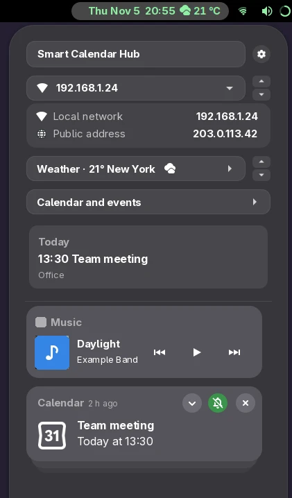

Your GNOME clock menu, reimagined as a unified side panel.
Smart Calendar Hub turns GNOME's clock menu into a full-featured side panel. Your calendar, weather forecast, notifications, and clocks live together in one clean space, while top bar extensions embed their menus directly inside the panel instead of opening detached floating popups.
Extensions in the top bar typically open detached popups with disparate styling. Smart Calendar Hub unifies them: clicking any tray icon renders its complete menu seamlessly inside the panel, adhering to consistent item padding, typography, and separators.
Navigate back effortlessly using the back button, the Escape key, or another quick click on the tray icon.

A few of the cards of the panel, as they look on your desktop.
Everything can be switched on or off from a preferences window with tabs.
The icons of your apps at the top of the panel, arrows when they don't fit, and their menus inside the panel.
The weather in the clock pill and in the panel, and a small sky with the real position of the sun and the moon.
A calendar that fits the panel, your online accounts' colours, and today's events one click away.
From the bell: no banners for an hour, until tomorrow or always. Its messages wait in the panel.
World clocks as small dials, the alarms and timers of GNOME Clocks, with a countdown you can pause.
Accent colour on the icons, tighter spacing, the battery as a ring, the IP address. Also on the lock and login screens.
Smart Calendar Hub is engineered to complement your existing workflow. Compatibility is handled entirely client-side: upstream extensions remain 100% stock with zero modifications needed from their authors.
| Extension | How it works with the hub |
|---|---|
| AppIndicator / KStatusNotifierItem | Provides native application status icons in GNOME. Smart Calendar Hub relocates them to the panel's tray and renders their complete menus (and nested submenus) natively inside the sidebar. |
| WiFi Signal Plus | Visualizes Wi-Fi performance meters, signal history, and nearby SSIDs. Inside the hub, all widgets stay fully interactive while container backgrounds are automatically balanced for visual harmony. |
| Top Bar Organizer | Built-in cooperative ordering: a single toggle syncs the hub's clock position directly with Top Bar Organizer's preferences to prevent layout conflicts, safely restoring your original order when turned off. |
If your GNOME extension creates a panel button in the top bar, it already works out of the box: when its icon is in the hub's tray, Smart Calendar Hub automatically embeds its menu and items.
To further fine-tune the presentation, you can optionally attach a smartCalendarHub object to your panel button. It is completely safe, non-intrusive, and silently ignored by GNOME Shell when the hub isn't installed.
sch-hub-page.// Optional integration metadata on your PanelMenu.Button
this._button.smartCalendarHub = {
// Custom label displayed in the hub's sidebar header
title: 'My Extension',
// Optional callback to construct a custom full-width widget/page
buildPage: () => {
return new MyCustomSidebarWidget();
},
// Set to true to preserve your own container styling and backgrounds
keepStyle: false,
};